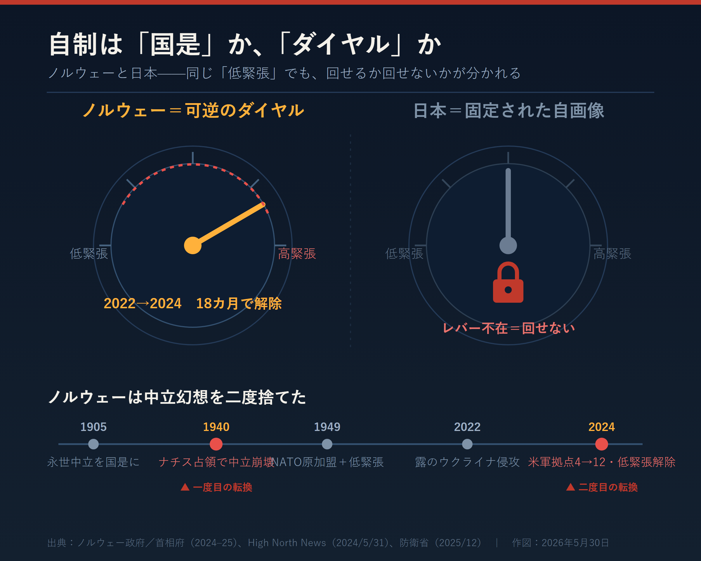

引っかかったのは、伊勢崎賢治が国会で「見習え」と引いたノルウェーの自制を、当のノルウェーが同じ時期に解体していたことだ。賞味期限が、引用より短い。
れいわ新選組の比例特定枠で2025年7月に初当選した伊勢崎は、参議院予算委員会（同年8月5日）で高市政権に迫った。ノルウェーは強い国軍を持ちながら、ロシアと接する北部では演習をしない。日本もこの自制を見習え、と。緩衝国家論の核心である。
その「北部で演習しない」運用を、ノルウェーはすでに畳んでいた。
順を追う。ノルウェーの自制には、輸入する側が決まって見落とす前提がある。1905年にスウェーデンから独立したこの国は、永世中立を国是とした。その国是は、1940年4月、ナチス・ドイツの侵攻で一発で崩れる。中立が占領を招いた。亡命政府が引き出した教訓は、武装解除ではない。中立は幻想だ、という正反対の結論だった。
だから1949年、ノルウェーはNATO原加盟12カ国の一つになる。労働党政権が主導し、国会はほぼ全会一致で批准した。そのうえで条件を付けた。平時に外国軍の常駐基地を置かない。核を配備しない。ソ連国境の近くで大規模演習をしない。伊勢崎が引いたのは、この三つだ。
ここを取り違えてはいけない。ノルウェーの低緊張は、信条ではなかった。NATOという集団防衛の傘の内側で、隣の超大国を不必要に刺激しないために回した設定値だ。31の同盟国が抑止を肩代わりする。だから自国一国が構えを緩めても、抑止は痩せない。自制は国是ではなく、可逆のダイヤルだった。
そのダイヤルが、2022年に回った。
ロシアがウクライナに全面侵攻すると、ノルウェーは18カ月で構えを変える。2024年2月2日、米国とのSDCA（補足的防衛協力協定）改定に署名し、6月10日に発効。米軍がアクセスできる施設を4カ所から12カ所へ広げた。増えた8カ所には、対露最前線の北部にあるアンドーヤ空軍基地、バルドゥフォス、北極圏の軍港ホーコンスヴェルンが並ぶ。そこへ米軍の「妨害なきアクセス」を与えた。国会の票は85対12。反対は社会主義左派党と赤党だけだった。国防費もGDP比2.2%（2024年）から2035年に3.5%へ引き上げる。

伊勢崎が「見習え」と名指しした北部の自制を、ノルウェーは自分の手で解いていた。
引用の核が、引用された瞬間に過去形になっていた。
軍拡か軽武装か、という論争に持ち込むこともできた。やめた。問題はそこにない。ノルウェーが見せたのは自制の量ではなく、自制を解く速さ──脅威に応じて設定を回す能力そのものだからだ。
日本には、その能力がない。GDP比2%という物差しがすべてを語っている。脅威の大きさで防衛を決めるのではなく、自国の経済規模で決める。相手が何をしてくるかではなく、自分の財布の何%か。これ以上ない平時の文法だ。三文書の改定には年単位かかり、専守防衛はもう姿勢ではなく、動かせない信条になった。日本は安全保障を、回せる設定ではなく、書き換えられない自画像として抱えている。
ここに、左も右も触れない欠陥がある。
ノルウェーの18カ月を羨む前に見るべきは、日本にはダイヤルを回すレバーが最初からない、という事実だ。緊急事態条項を持たない憲法。有事の決断すら、平時の国会手続きで回すしかない構造。ノルウェーは低緊張を選び、そして選び直した。日本は低緊張すら、主体的には選べない。選び直す文法を、制度として持っていないからだ。
伊勢崎の質問は、皮肉にもこの欠陥を照らす。低緊張を見習えと言う。だが見習うべき相手は、低緊張も高緊張も自在に選べる国だ。低緊張だけを固定姿勢として輸入すれば、再現されるのは1949年の同盟下のノルウェーではない。中立を抱えたまま占領された、1940年のノルウェーだ。
保守が守るべきは、特定の姿勢ではない。姿勢を脅威に応じて回す、判断の可逆性そのものだ。
やることは二つに絞れる。GDP比という平時の物差しを捨て、脅威の水準に防衛を連動させる可変ドクトリンを文書に書き込む。相手が拠点を増やせば増やし、退けば退く。その連動を明文化する。そして緊急事態条項の議論を、「軍拡の入口」ではなく「ダイヤルを手に入れる」問題として定義し直す。レバーを持つことと、それを右へ回すことは、別の話だ。
最後に残る矛盾を引き受けねばならない。可逆性を手にした日本は、いつか伊勢崎の望む側へ──低緊張へ──ダイヤルを回す自由も得る。レバーを握るとは、軍拡の自由であり、同時に自制を選び直す自由でもある。今の日本は、そのどちらも持たない。緩衝国家になれるかを論じる前に、まだ文法がない。問われているのは構えの重さではない。構えを変えられる国になる覚悟だ。
出典・ファクトメモ
- 伊勢崎賢治：れいわ新選組・比例特定枠で2025年7月20日初当選。参議院予算委員会（2025年8月5日）等で質問（長周新聞、参議院プロフィール）
- ノルウェー中立放棄→NATO原加盟：1905年独立・永世中立→1940年ナチス占領→1949年NATO原加盟12カ国
- SDCA改定：2024年2月2日署名／6月10日発効、米軍アクセス施設 4→12カ所、議会承認85対12（ノルウェー政府、High North News 2024/5/31）。追加8施設に北部基地（アンドーヤ、バルドゥフォス、ホーコンスヴェルン等）、米軍「妨害なきアクセス」付与
- 国防費：GDP比2.2%（2024）→3.3%（2025推計）→3.5%（2035目標）（ノルウェー首相府 2025/6/20）
- 日本：FY2026防衛費9兆353億円（防衛省 2025/12）。高市政権がGDP比2%前倒し到達を宣言（補正ベース／実質GDPベースでは約1.5%との指摘あり・Bloomberg 2025/12）
- 反対視点：SIPRI（Policy Brief 2506, 2025/6）は日本と北欧で安保優先領域が異なると指摘